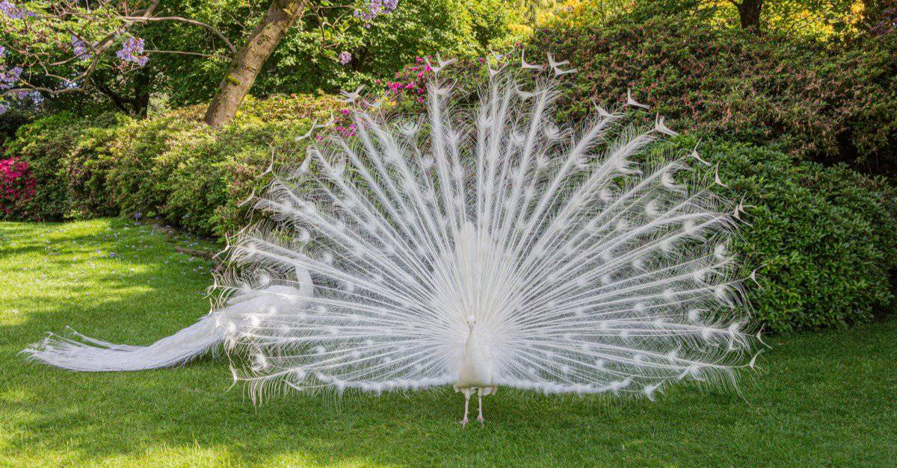
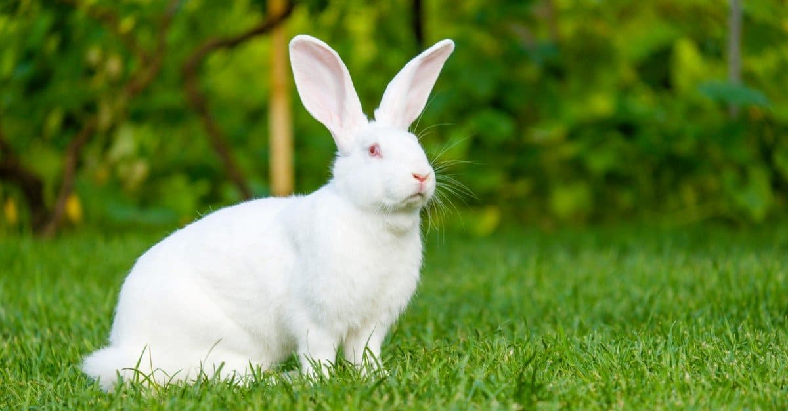
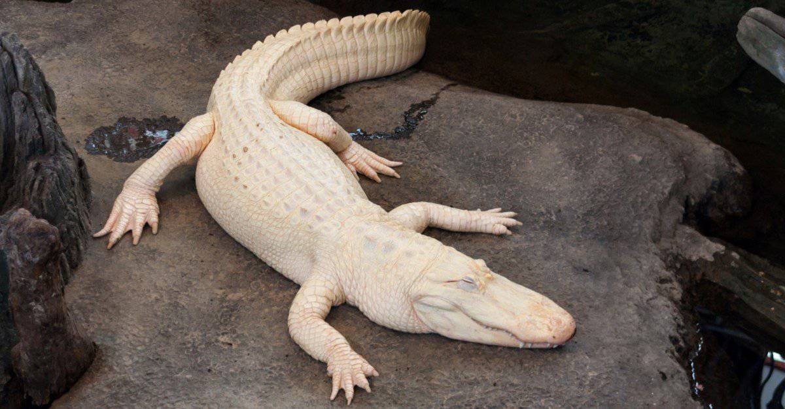
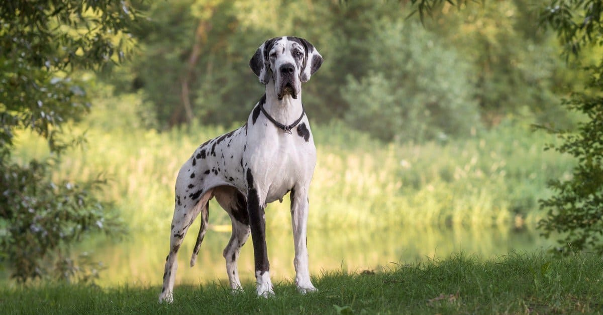
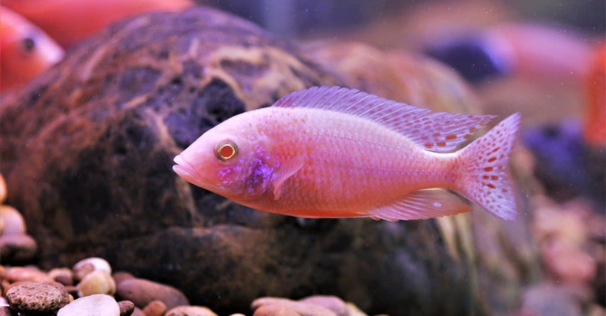

Albino Animals: Amazing White Animals
Key Points:
- White peacocks, which some believe symbolize unconditional love, are rare birds with pure white feathers. They are not albinos but have leucism.
- The arctic fox has white fur in the winter, which acts as camouflage in its snowy environment. In spring and summer, its coat changes to brownish-gray.
- Albino rabbits have white fur and red eyes due to a genetic mutation. They skin is sensitive to the sun, and they can’t see as well as rabbits with black eyes.
When you think of a squirrel you probably envision one with gray or brown fur. Or, when someone says the word alligator, you likely think of a reptile with dark green scales sliding through the water. But did you know that some squirrels have white fur, and some alligators have snow-white scales?
It’s true. These are some examples of albino animals.
Just imagine seeing a white squirrel gathering nuts alongside a gray or brown squirrel. They are both squirrels, but one has white fur! This phenomenon is seen in many types of animals.
Albino Rabbit
You’ve probably seen a lot of rabbits with white fur along with other colors in their coat. So, what makes an albino rabbit different? An albino rabbit must have both solid white fur and red eyes. Albino rabbits have a genetic mutation that causes abnormal pigmentation. This takes the form of a solid coat of bright white fur and red eyes. Any breed of rabbit can experience this genetic mutation.
Albino rabbits make great pets just like other kinds of rabbits. However, there are some special considerations when caring for an albino rabbit. For one, their white fur makes them more sensitive to heat and sunlight. Plus, this rabbit’s eyesight may not be as sharp as rabbits with dark eyes. So, their outdoor exercise and other activities need to be monitored a little more closely than other types of rabbits.
Albino Alligators
An alligator doesn’t seem to belong on a list of snow-white animals. Alligators have dark green scales and brown eyes, right? Well, this is true most of the time. But the albino alligator makes for a very intriguing exception.
An albino alligator has a genetic mutation, resulting in a lack of pigment or color in its skin. So, these alligators are all white animals with eyes a light shade of pink.
Though this alligator seems to have the same level of eyesight as its green relatives, it has a disadvantage. Because of its bright white skin, it’s not able to camouflage itself in its habitat. This makes it vulnerable to predators. Plus, its light skin puts it at risk of being burned when it spends too much time basking in the sunlight. Alligators are cold-blooded and have to bask in the sunlight for a certain amount of time in order to warm their bodies.
White Great Dane
The White Great Dane is another one of the albino animals on this list. Great Danes are seen with fur coat colors including brindle, fawn, black, and silver, among others. A White Great Dane has a genetic mutation that makes its fur white and its eyes light blue. Some White Great Danes have a few light spots on their coat.
Unfortunately, the genetic mutation of White Great Danes causes most of them to be born deaf. Someone who adopts a White Great Dane should be prepared to give this dog extra guidance and attention due to its deafness. Though these dogs look quite different from the traditional Great Dane, they possess the same sweet, affectionate nature of the breed.
Albino Peacock Cichlids
The name albino peacock cichlid seems kind of confusing. Though this fish has the word Peacock in its name, Albino is more descriptive of its appearance. As a result of a genetic mutation, this fish is all white with red eyes. These fish are about six inches long and live in warm water lakes in eastern Africa. Not surprisingly, these glowing fish are always at risk of being eaten by predators. It’s very difficult for an Albino Peacock Cichlid to hide!
Many fish enthusiasts include Albino Peacock Cichlids in their aquariums. Though they don’t have colorful scales like other cichlids, they are very compatible with other types of fish. These white animals can add a pleasant contrast to an aquarium full of brightly colored fish!